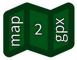

 map2gpx vous laisse tracer des
itinéraires (pour la randonnée par exemple) et les exporter aux formats GPX, KML ou GeoJSON. Il vous est aussi
possible d'importer vos propres fichiers pour afficher leurs données.
Utilisant les données issues de
Géoportail, cet outil
ne fonctionne que sur le territoire français. Pour une version internationale, veuillez utiliser
map2gpx.eu.
Pour rapporter un problème ou proposer des améliorations, n'hésitez pas à ouvrir un ticket sur le projet GitHub.
Plusieurs couches sont disponibles, fournies par différents services.
Si vous préférez utiliser les fonds de cartes IGN, vous pouvez cliquer ici.
Vous pouvez rechercher un lieu ou une adresse, pour y centrer la carte.
Pour démarrer une trace, cliquez sur ce bouton , puis cliquez sur la carte pour
ajouter un marqueur.
Cliquez à nouveau pour rajouter de nouveaux marqueurs aux points de passage; le tracé sera automatiquement
calculé en fonction des chemins répertoriés.
Attention: en mode tracé, vous devez utilisez le bouton + pour zoomer.
Par défaut, le tracé se fait en mode automatique ().
Le tracé peut ne pas fonctionner dans certains cas; vous pouvez activer le mode de tracé en
ligne droite pour tracer des lignes droites entre les marqueurs au lieu
du tracé automatique .
Le graphe vous affiche par défaut l'altitude et la pente sur la totalité de l'itinéraire. La pente de l'itinéraire est une estimation de la pente sur le sentier (i.e. la pente que vous avez à monter/descendre). Cette donnée, calculée par ce site, n'est fournie qu'à titre indicatif.
En cliquant sur "Pente du terrain" dans la légende, vous
pouvez aussi afficher la pente du terrain sur lequel passe l'itinéraire, telle qu'affichée par la couche
"Carte des pentes".
Une valeur de 45 indique une pente supérieure à 45°. 40 indique une pente entre 40° et 45°,
etc. Une valeur de 0 indique une pente inférieure à 30°.
Lorsque vous avez au moins 2 marqueurs, vous pouvez fermer la boucle de l'itinéraire via le bouton .
Une fois terminé, vous pouvez exporter l'itinéraire via le bouton .
Vous pouvez exporter aux formats GPX, KML (Google Earth) ou GeoJSON.
Vous pouvez déplacer les marqueurs en les glissant.
En déplaçant un marqueur intermédiaire, les tracés seront automatiquement recalculés en utilisant le mode de tracé actif (mode automatique ou le mode ligne droite ).
Vous pouvez supprimer un marqueur en sélectionnant le mode et en cliquant sur le marqueur à supprimer.
En supprimant un marqueur intermédiaire, un nouveau tracé sera calculé entre les marqueurs précédent et suivant en utilisant le mode de tracé actif (mode automatique ou le mode ligne droite )
Vous pouvez définir des points d'étapes, en sélectionnant le mode et en cliquant sur le marqueur à marquer comme étape.
Vous pouvez cliquer sur chaque itinéraire d'étape et sur chaque marqueur pour voir ses données.
Vous pouvez insérer un marqueur intermédiaire en sélectionnant le mode et en cliquant sur un tracé déjà existant. Vous pourrez alors déplacer le marqueur.
Cet outil a été créé par
Thomas Muguet, sous licence
MIT.
Le code source est disponible sur
GitHub.
Version actuelle :
map2gpx utilise: